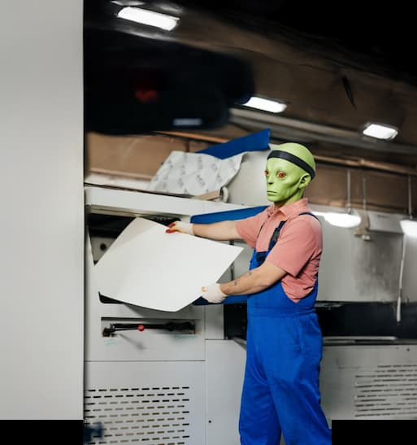
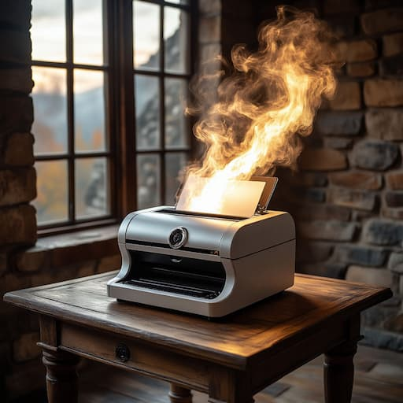
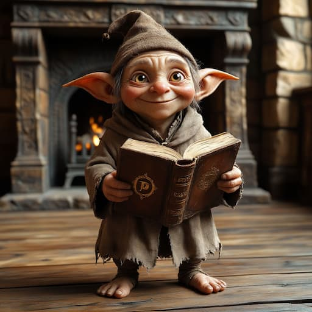
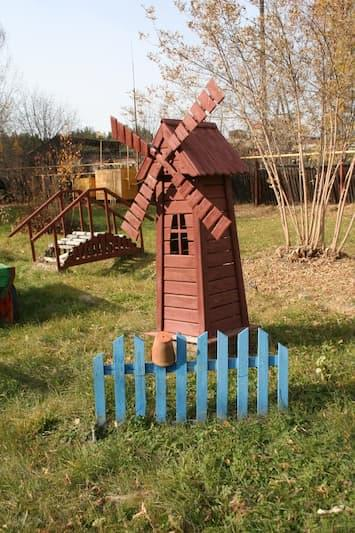

Знаете, почему мы лучшие? Потому что позавчера нам лично инопланетяне доставили оборудование из созвездия Печаткиных! Теперь мы можем печатать столько, что даже счёт потеряется где-то между 500 тысячами и миллионом экземпляров в секунду. Правда-правда!

А ещё мы такие экологичные, что печатаем вообще без краски и бумаги! Как? Да очень просто — у нас есть специальный принтер, который превращает воздух в чернила, а мысли в бумагу. Ну ладно, шутим, конечно. Но экологичность у нас на высшем уровне — используем только безопасные материалы и современные технологии.

Наши книги собирают не простые люди, а настоящие домашние эльфы! Они работают по ночам, когда все спят, и создают такие шедевры, что даже сами удивляются. А днём за дело берутся наши талантливые мастера, которые знают о печати всё и даже больше.

А знаете, где мы находимся? В самом настоящем лесу! Среди сосен и елей, где птицы поют такие красивые песни, что даже наше оборудование начинает подпевать (ну, может, это нам так кажется). Вода у нас — из собственной скважины, чистая-пречистая, прямо как слеза единорога!

Но если говорить без шуток, типография «Лазурь» — это современное производство полного цикла в окружении природы. Мы:
Мы можем:
Так что если вам нужна качественная полиграфия — обращайтесь в «Лазурь»! У нас не только профессионально, но и волшебно! А пение птиц и свежий лесной воздух — в комплекте! 😉